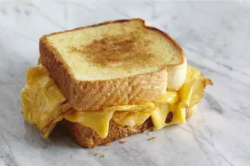

Grilled Cheese

Two slices a bread with cheese between grilled on a stove. Often made with butter on one side so they don't stick to the pan.
butter is sometimes replaced with mayonaise.
- butter pan
- wait until butter is melted
- lay one piece of bread on pan then cheese and then bread on top of the cheese
- cook until bread is gold or desired color